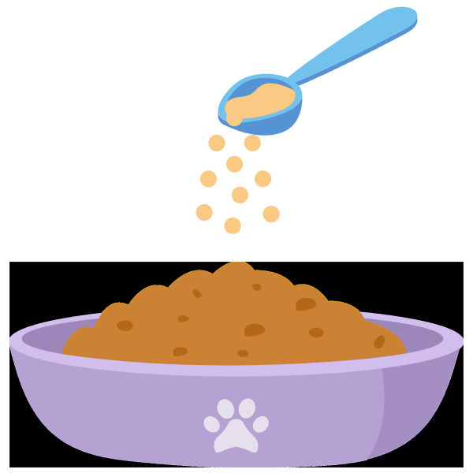

Digestive Health
Powder Supplement for Cats
A gentle daily powder that supports digestive comfort, promotes healthy gut balance, and helps cats feel more settled with their tummy day to day.


Why choose  ?
?
No Fillers
We never pad out our formulas with sugars or cheap bulking agents. Every scoop is made of only beneficial, active ingredients and real flavouring.
Cat-Only
Unlike generic blends made for dogs too, Cloud9 is developed exclusively for cats. Every ingredient is chosen with feline health in mind.
Charity Support
Together, we can make a difference. A portion of every Cloud9 sale is donated to UK cat charities, helping to fund food, shelter, and care for cats in need. Read More

Cloud9 Success Story
“Since starting Cloud9 Stress & Anxiety formula, Luna is much less stressed around visitors - it's made a huge difference to his confidence”
— Sarah, LondonShare your cat’s story! Leave us a review and get featured on our site and Instagram.
 Leave a Review
Leave a Review
Inside Every Scoop

Soothing fibres, microbiome support, and gentle nutrition come together to promote comfortable digestion and balanced stools.

Pumpkin Powder 100 mg
Short-termNatural soluble fibre that helps promote regular, comfortable stools.
- Supports stool consistency during occasional upsets
- Helps maintain gentle, regular motility
Slippery Elm Powder 125 mg
Short-termA soothing, mucilaginous fibre that supports a calm digestive tract.
- Helps settle sensitive tummies
- Promotes comfortable digestion day to day
Inulin (Prebiotic) 125 mg
OngoingPrebiotic fibre that nourishes beneficial gut bacteria.
- Supports a balanced microbiome
- Helps maintain healthy stool patterns
Prozyme® Digestive Enzymes 125 mg
OngoingEnzyme blend to support efficient breakdown of food.
- Promotes nutrient absorption
- Helps reduce bloating and gas
Colostrum Powder 150 mg
OngoingNaturally rich in factors that support gut lining and resilience.
- Helps maintain digestive comfort
- Supports everyday gut well-being
Lactobacillus acidophilus 20 mg
OngoingFriendly bacteria that help maintain a healthy gut environment.
- Supports digestive balance
- Contributes to comfortable stools
Bifidobacterium bifidum 20 mg
OngoingBeneficial bacteria that promote balance in the large intestine.
- Helps maintain regularity
- Supports overall digestive comfort
Chicken Heart Powder
PalatabilityHighly digestible protein with natural taurine for a tasty, gentle base.
- Encourages daily use with great taste
- Supports overall digestive function
Goat Milk Powder
PalatabilityGentle nutrition that’s easy to digest and naturally palatable.
- Helps meals mix smoothly
- Supports everyday digestive comfort
Feeding Guide
Find the right amount for your cat’s size and lifestyle.
Serving Size
Small Cats (under 4kg)
1 scoop per dayLarge Cats (over 4kg)
2 scoops per day
One pouch = 75 scoops (75g). Mix daily with your cat’s usual food.
Tip: Give an extra ½ scoop 2 hours before stressful events such as fireworks or travel.
How to Feed
Sprinkle the scoop onto wet food and mix well.
We use real ingredients for real flavouring, so our mixes are generally well accepted by cats
but for especially picky eaters, stir into a yoghurt-style treat, or mix with our Hydration Booster for a tasty paste.
Start small — gradually build up to a full serving if your cat is cautious.
For best results, pair our Stress & Anxiety Powder with positive training techniques. Build your cat’s confidence, reduce anxiety triggers, and support their well-being.
Read the Training GuideWhy not also check out...

Stress & Anxiety

Joints & Mobility
Probiotic Gut Health

Skin & Coat
Catnip Mouse

Character Wand

Catnip Rabbit

Steel Lickmat
We love to hear from you
Want 10% off your first order and exclusive offers and updates?
Join the Cloud9 Club for exclusive promotions, case study updates & feline tips.